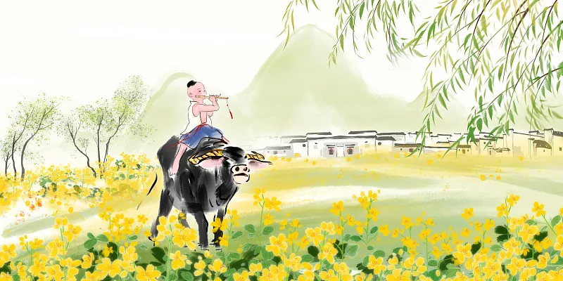

清明节
———踏青怀远话清明
起源演变
清明节源自周代寒食节与上巳节的融合，《历书》载“春分后十五日，斗指丁，为清明”。唐代正式将寒食祭祖与清明踏青合并，白居易“乌啼鹊噪昏乔木，清明寒食谁家哭”印证了习俗交融。宋代《清明上河图》描绘了汴京百姓携酒担食出郊扫墓的场景，明清时期插柳、放风筝等民俗定型，1935年民国政府将其定为法定假日。
核心习俗：
民间讲究“剃龙头”“吃龙食”“祭土地”
扫墓祭祖：
京闽南地区“培墓”需整修祖坟，供品必备“三牲五果”；
插柳辟邪：
老北京“清明不戴柳，红颜成皓首”之说，苏杭女子将柳枝编成花环；
寒食传承：
江南青团用艾草汁染糯米，北方晋中保留冷食子推燕、馓子传统；
踏青蹴鞠：
山西代县“寒燕风筝”长达百米，需30人协作放飞。
文化意义
节日体现“慎终追远”的伦理观与“天人合一”的自然观。安徽黄山“清明粿”用鼠曲草制成，取《黄帝内经》“春食甘，脾平安”之意；广西壮族在坟前跳铜鼓舞告慰先人，鼓点暗合《周易》六十四卦数理。
现代新生
民政部推广“云祭扫”平台，3D扫描技术可还原祖宅风貌；上海福寿园推出生态葬“二维码墓碑”，扫码即可查看逝者数字生平。2024年成都举办“清明农耕嘉年华”，青少年用古法栽种清明秧，体验“耕读传家”的文化密码。
